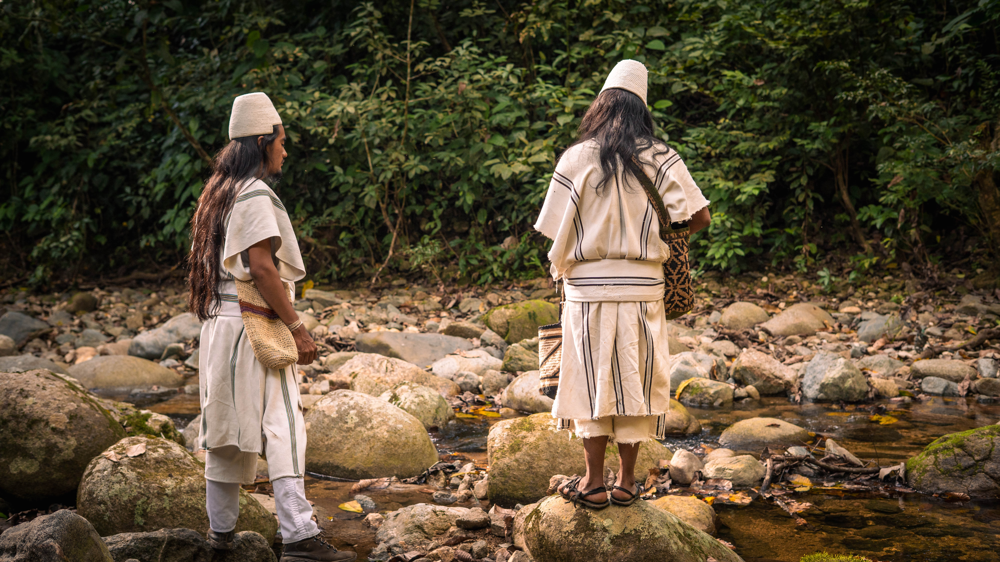

Así como Wade Davis y otros autores han escrito sobre sus recorridos en los lugares de la Sierra. Empezaré contando mis vivencias.
Una infancia con grandes recuerdos ha hecho posible el momento del ahora, persistente, bien cubierto por la memoria. Estas imágenes del pasado se han convertido en un escudo, razón y refugio para mi propia alma, capaz de disipar cualquier sombra negativa al fortalecer mi propósito.
Desde la parcela más baja, Arwamake, luego de un largo tiempo de tres horas a lomos de bestias junto al río —y a veces caminando—, mis familiares, especialmente mi papá y yo íbamos, al lugar llamado Donachwi, como el de tantos otros de la Sierra, que luego dejaría recuerdos:
{kind=link}

Entre las montañas, llegando a Donachwi y faltando apenas unos cientos de metros, había una magnífica cascada hacia la derecha, en medio del verde del bosque. Se deslizaba majestuosamente sobre el rocoso o Pedrero cerro. Su esencia llegaba directamente al rostro con un soplo fresco, a pesar de la lejanía, alguien estuvo allí cuidándonos, era una sensación intensa que no necesitaba designio de nadie, simplemente se sentía y se vivía en el instante. La cascada se tornaba blanca y espumosa. Apenas en las afueras de la casa, podía verla a pesar de la distancia. Parecía caer directamente del cielo.

Generalmente, razones por las que emprendíamos viajes eran para pasar días de trabajo en el campo, sembrando o cosechando, en busca de bastimentos.
En los mensajes de Mayores, como Mamo Miguel Villafaña Suárez, nos cuenta que los ancestros permanecían durante todo el día y largas horas de la noche bajo la luz de la luna trabajando con la tierra, creando el vínculo supremo a su dependencia, de la panela de la caña de azúcar, bastimentos, batata, algodón y de las fibras de maguey tejían mochilas coloridas junto a las plantas silvestres de colores.

Este lugar como otros de la Sierra es especial para los que lo o los habitamos, y no solamente por el hecho de habitarlos, sino porque hay historias, cuentos, sabiduría, que nos transforman en quienes somos.
En el lugar donde nacemos se siente un poder acogedor cuando allí se ha nacido, que llama con clamor y desesperación solo para vivirlo y con más sonoro de su vibración presenciar el ritmo de los pasos constantes y el susurro diluyente que los ancestros marcaron en el presente. Los caminos, la cascada y el río que baja del páramo, forman experiencias de los ancestros, y en ese hilo de ideas todos somos parte.